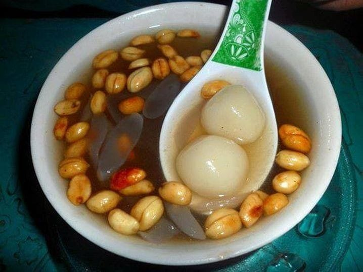

Ronde adalah makanan tradisional Tionghoa dengan nama asli Tāngyuán. Nama tangyuan merupakan metafora dari reuni keluarga.Ronde terbuat dari tepung ketan yang dicampur sedikit air dan dibentuk menjadi bola, direbus, dan disajikan dengan kuah manis. Ukurannya bisa kecil atau besar,diberi isi maupun tidak.
Resep Wedang Ronde
Bahan Ronde
150 Gram tepung ketan putih
1/4 Sendok teh garam
135 Ml air hangat
2 Tetes pewarna hijau tua
2 Tetes pewarna merah cabai
50 Gram kacang tanah kupas sangrai
25 Gram gula pasir
1/8 Sendok teh garam
Bahan Sirup Jahe
2 Liter air
400 Gram gula pasir
400 Gram jahe bakar dan memarkan
1 Sendok teh garam
4 Lembar daun pandan
6 batang serai,memarkan
Bahan pelengkap
200 Gram kolang-kaling,rebus dan iris
3 Roti tawar tanpa kulit,potong dadu
25 Gram sagu mutiara merah,rebus